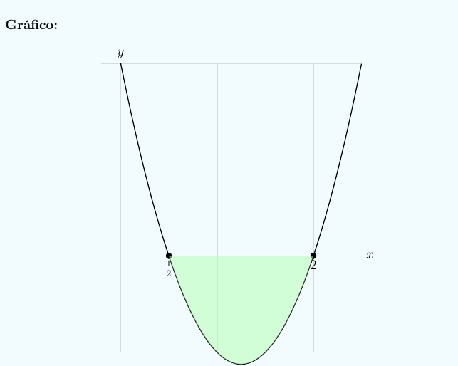

Ecuación con radicales
Resuelve la ecuación:
\[ \sqrt{x + 3} + \sqrt{x - 1} = 4 \]
Elevamos al cuadrado ambos lados:
\[ (\sqrt{x + 3} + \sqrt{x - 1})^2 = 4^2 \implies (x + 3) + (x - 1) + 2\sqrt{(x+3)(x-1)} = 16 \]
\[ 2x + 2 + 2\sqrt{(x+3)(x-1)} = 16 \implies 2\sqrt{(x+3)(x-1)} = 14 - 2x \]
Dividimos entre 2:
\[ \sqrt{(x+3)(x-1)} = 7 - x \]
Elevamos al cuadrado nuevamente:
\[ (x+3)(x-1) = (7 - x)^2 \]
\[ x^2 + 2x - 3 = 49 - 14x + x^2 \]
Simplificamos:
\[ 2x - 3 = 49 - 14x \implies 16x = 52 \implies x = \frac{13}{4} \]
Verificamos en la ecuación original:
\[ \sqrt{3.25 + 3} + \sqrt{3.25 - 1} = \sqrt{6.25} + \sqrt{2.25} = 2.5 + 1.5 = 4 \]
Solución válida: \( x = \dfrac{13}{4} \)
Inecuación cuadrática
Resuelve la inecuación:
\[ 2x^2 - 5x + 2 < 0 \]
Raíces de \(2x^2 - 5x + 2 = 0\):
\[ \Delta = 25 - 16 = 9,\quad x = \frac{5 \pm 3}{4} \implies x_1 = \frac{1}{2},\; x_2 = 2 \]
Como el coeficiente de \(x^2\) es positivo, la parábola abre hacia arriba.
La expresión es negativa entre las raíces.

Parábola que corta el eje X en \(x = \tfrac{1}{2}\) y \(x = 2\)
Solución: \( \dfrac{1}{2} < x < 2 \)
Inecuación con tabla de signos
Resuelve:
\[ 2x^2 - 5x + 2 < 0 \]
Factorización:
\[ 2x^2 - 5x + 2 = 2\left(x - \tfrac{1}{2}\right)(x - 2) \]
Tabla de signos por intervalos:
\[
\begin{array}{c|c|c|c}
\text{Intervalo} & (-\infty,\;\tfrac{1}{2}) & (\tfrac{1}{2},\,2) & (2,\,+\infty) \\ \hline
x - \tfrac{1}{2} & - & + & + \\
x - 2 & - & - & + \\
2 & + & + & + \\ \hline
2(x-\tfrac{1}{2})(x-2) & + & \color{blue}{-} & + \\
\end{array}
\]
El producto es negativo solo en \( (\tfrac{1}{2}, 2) \).
La desigualdad es estricta, así que no se incluyen los extremos.
Solución: \( \dfrac{1}{2} < x < 2 \)
Sistema de ecuaciones
Resuelve:
\[
\begin{cases}
x + y + z = 6 \\
2x - y + z = 3 \\
x + 2y - z = 2
\end{cases}
\]
Sumamos (1) + (2): \( 3x + 2z = 9 \)
Sumamos (1) + (3): \( 2x + 3y = 8 \)
Despejamos \( z = 6 - x - y \)
Sustituimos en \( 3x + 2z = 9 \): \( x - 2y = -3 \)
Resolvemos el sistema:
\[
\begin{cases}
x - 2y = -3 \\
2x + 3y = 8
\end{cases}
\]
Solución: \( x = 1,\; y = 2,\; z = 3 \)
Solución: \( (x, y, z) = (1, 2, 3) \)
Ecuación exponencial
Resuelve:
\[ 9^{x} - 10 \cdot 3^{x} + 9 = 0 \]
Cambio de variable: \( t = 3^x \Rightarrow 9^x = t^2 \)
Ecuación: \( t^2 - 10t + 9 = 0 \)
Factorizamos: \( (t-1)(t-9) = 0 \)
Soluciones: \( t = 1 \Rightarrow x = 0 \), \( t = 9 \Rightarrow x = 2 \)
Soluciones: \( x = 0 \quad \text{y} \quad x = 2 \)
Ecuación logarítmica
Resuelve:
\[ \log(x^2 - 1) = \log(3) + \log(x - 1) \]
Propiedad: \( \log a + \log b = \log(ab) \)
\[ \log(x^2 - 1) = \log(3(x - 1)) \]
Igualamos argumentos: \( x^2 - 1 = 3x - 3 \)
\[ x^2 - 3x + 2 = 0 \implies (x-1)(x-2)=0 \]
Comprobamos dominio: \( x > 1 \)
Solo \(x = 2\) es válida.
Solución: \( x = 2 \)
Ecuación trigonométrica
Resuelve en \([0, 2\pi)\):
\[ \cos(2x) - \tan(x) \sin(2x) = 0 \]
Usamos identidades trigonométricas.
Llegamos a: \( 1 - 4\sin^2 x = 0 \)
\[ \sin x = \pm \frac{1}{2} \]
En \([0, 2\pi)\): \( x = \frac{\pi}{6},\; \frac{5\pi}{6},\; \frac{7\pi}{6},\; \frac{11\pi}{6} \)
Soluciones: \( x = \dfrac{\pi}{6},\; \dfrac{5\pi}{6},\; \dfrac{7\pi}{6},\; \dfrac{11\pi}{6} \)
Mediatriz por igualdad de distancias
Calcula la ecuación de la mediatriz del segmento con extremos \(A(1, 2)\) y \(B(5, 6)\).
Solución:
Sea un punto cualquiera \(P=(x,y)\) sobre la mediatriz. Por definición:
\[ d(P, A) = d(P, B) \]
Aplicando la fórmula de distancia:
\[ \sqrt{(x - 1)^2 + (y - 2)^2} = \sqrt{(x - 5)^2 + (y - 6)^2} \]
Elevamos al cuadrado ambos lados:
\[ (x - 1)^2 + (y - 2)^2 = (x - 5)^2 + (y - 6)^2 \]
Desarrollamos ambos lados:
\[ (x^2 - 2x + 1) + (y^2 - 4y + 4) = (x^2 - 10x + 25) + (y^2 - 12y + 36) \]
Simplificamos (eliminamos \(x^2, y^2\)):
\[ -2x + 1 - 4y + 4 = -10x + 25 - 12y + 36 \]
Ordenamos:
\[ -2x - 4y + 5 = -10x - 12y + 61 \]
Pasamos todos los términos a la izquierda:
\[ -2x - 4y + 5 + 10x + 12y - 61 = 0 \]
\[ 8x + 8y - 56 = 0 \]
Dividimos entre 8:
\[ x + y - 7 = 0 \]
Esta es la ecuación de la mediatriz.
Parábola asociada (referencia)
Ecuación: \( x + y = 7 \)
Área de un triángulo con vértices dados
Calcula el área del triángulo con vértices \(A(1, 1)\), \(B(4, 2)\) y \(C(2,5)\).
Cálculo de la base \(AB\):
Distancia entre \(A\) y \(B\):
\[ AB = \sqrt{(4 - 1)^2 + (2 - 1)^2} = \sqrt{3^2 + 1^2} = \sqrt{10} \]
Vector \(\overrightarrow{AB}\):
\[ \overrightarrow{AB} = (4 - 1,\; 2 - 1) = (3, 1) \]
Pendiente de la recta \(AB\):
\[ m = \frac{1}{3} \]
Ecuación de la recta \(AB\) (punto-pendiente con \(A(1,1)\)):
\[ y - 1 = \frac{1}{3}(x - 1) \implies y = \frac{1}{3}x + \frac{2}{3} \]
En forma general: \( x - 3y + 2 = 0 \)
Altura: distancia de \(C(2,5)\) a la recta \(AB\):
\[ d = \frac{|1\cdot2 + (-3)\cdot5 + 2|}{\sqrt{1^2 + (-3)^2}} = \frac{|2 - 15 + 2|}{\sqrt{10}} = \frac{11}{\sqrt{10}} \]
Área del triángulo:
\[ \text{Área} = \frac{1}{2} \times \text{base} \times \text{altura} = \frac{1}{2} \times \sqrt{10} \times \frac{11}{\sqrt{10}} = \frac{11}{2} \]
Área: \( \dfrac{11}{2} \)